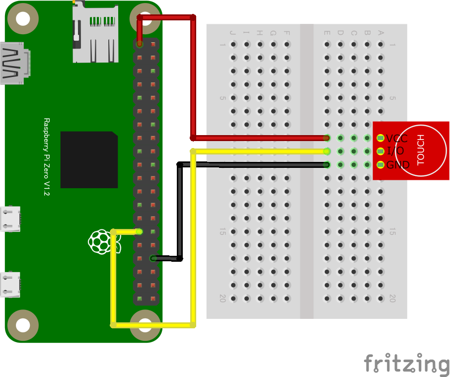

import {requestGPIOAccess} from "./node_modules/node-web-gpio/dist/index.js";
const sleep = msec => new Promise(resolve => setTimeout(resolve, msec));
async function switchCheck() {
const gpioAccess = await requestGPIOAccess();
const port = gpioAccess.ports.get(5);
await port.export("in");
port.onchange = showPort;
}
function showPort(ev){
console.log(ev.value);
}
switchCheck();